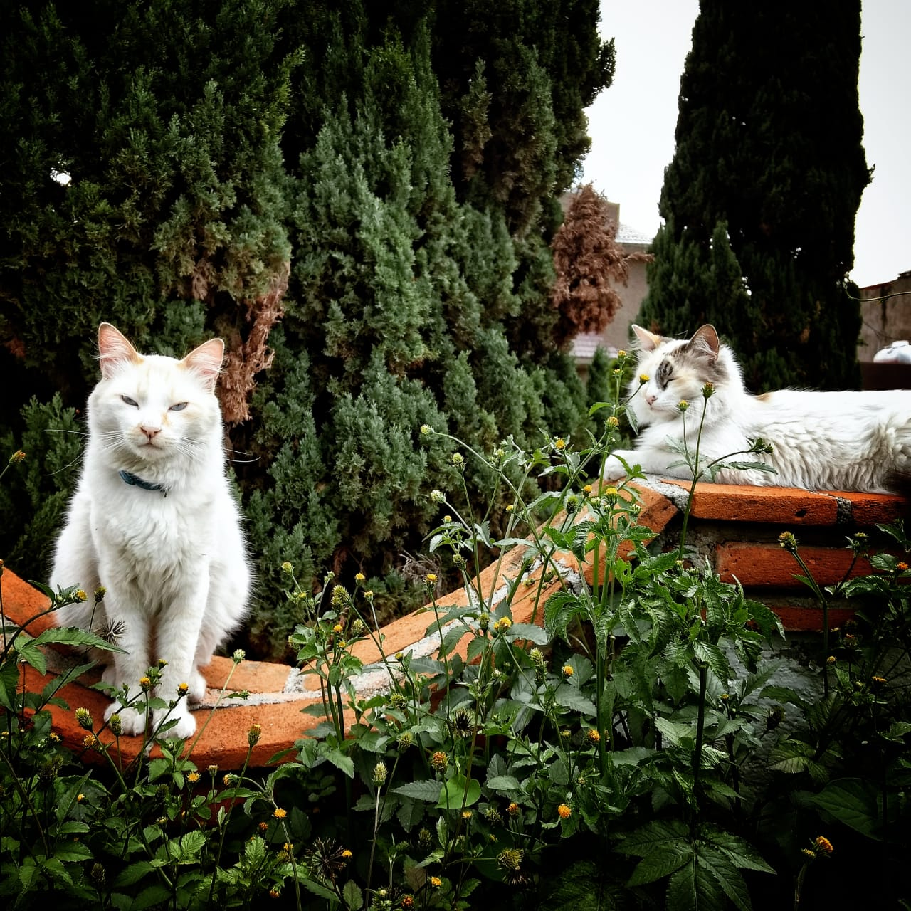

MINI BIOGRAFÍA
¿Cómo me llamo? Gabriela Díaz
pa' los cuates, Gaby
¿Qué hago? Soy Arquitecta
aunque soy arquitecta por título, trabajo como arquitecta urbanista y de landscape
Tengo 27 años
Vivo en la CDMX
¿Por qué DEVF?
¿Qué espero del master en CODING?
Quiero trabajar haciendo cosas que realmente disfrute, la arquitectura me gusta, pero no me veo trabajando de eso toda mi vida, ni quiero hacerlo, entonces decidí que nunca es tarde para re dirigir tu camino ni para aprender, y que mejor momento que ahora, que tengo disposición, tiempo y sobretodo dinero
¿Qué me gusta hacer?
- Amo pasar tiempo con mis gatos
- Leer fantasía
- Cocinar postres

¿Mis bandas/singer favorit@s?
- Pearl Jam
- U2
- Chris Stapleton
FOLLOW ME
Instagram de mis gatitos